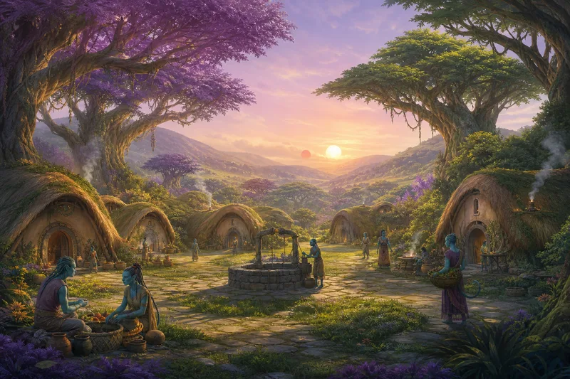
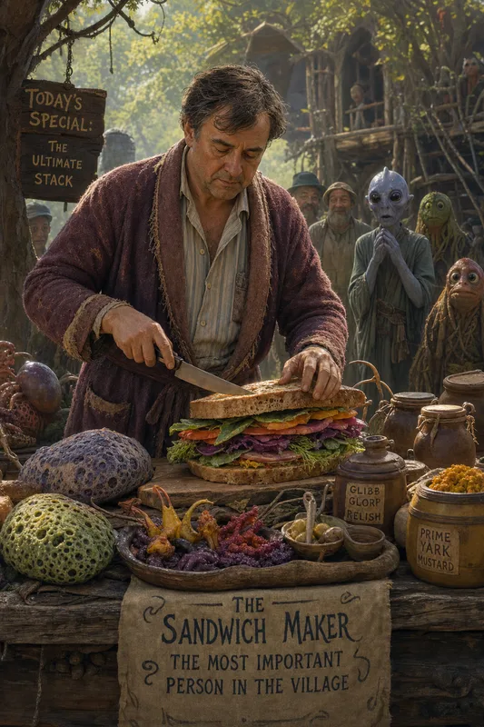
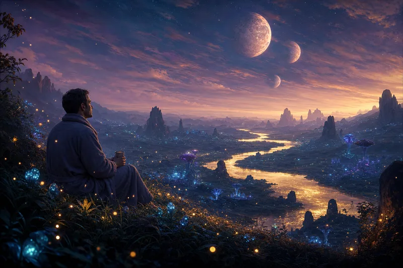
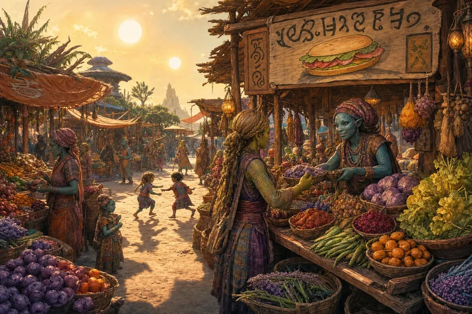
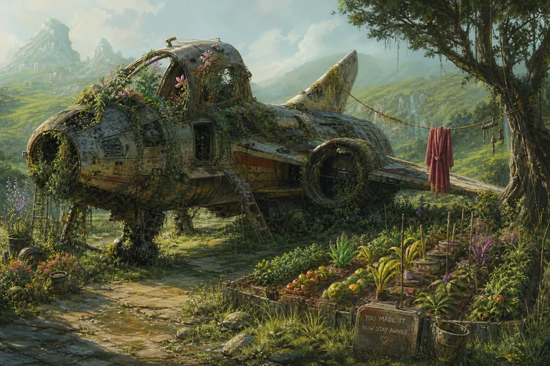
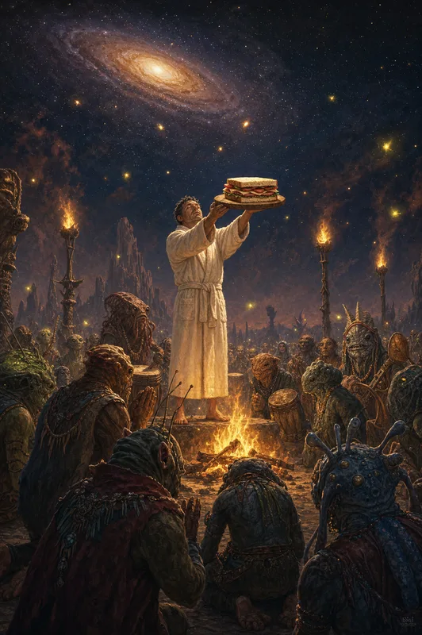

Lamuella is not a planet anyone goes to. It is a planet people end up on. The kind of planet that exists in the margins of every star map, in the spaces between the interesting places, in the footnotes of the Hitchhiker's Guide under the entry: "Mostly harmless."
The village has no name. It doesn't need one. There is only one village. Naming it would imply there might be others worth distinguishing it from. There aren't.
The huts are round. The people are kind. The technology peaked at the wheel and then everyone agreed that was probably far enough. Someone once invented a slightly better wheel and was asked politely to stop.

Arthur Dent had been many things. A man from Cottington. A bewildered hitchhiker. A man who had seen the destruction of his planet while still in his bathrobe. A man who had argued with Vogons, been insulted by robots, fallen in love with a woman who existed in multiple dimensions simultaneously, and once — memorably — learned to fly by throwing himself at the ground and missing.
Now he was the Sandwich Maker.
Not because he chose it. Because the universe, after throwing everything at him for years, finally got tired and said: "Fine. Here. Make sandwiches. Be happy. I give up."
And he was happy. Genuinely, completely, for the first time since a Thursday morning in Cottington when he'd lain in front of a bulldozer and the universe had decided that was the last ordinary thing that would ever happen to him.
The Sandwich Maker understood bread the way a poet understands silence. He knew when the Perfectly Normal Beast was ready — not by looking at it, but by the way the fat sang in the pan. He knew which leaves of the Dorana herb to place where, and how the Gundra paste should be applied: not spread, but considered onto the bread, in a motion that was part brushstroke, part prayer.

Every evening, Arthur Dent sat on the hill above the village and watched the two suns set. The first sun went down like a curtain falling. The second lingered, as if checking whether anyone needed anything else before it left.
He held a cup of something that was not tea. It was close enough. It was warm and brown and slightly bitter and if he held the cup at the right angle and didn't think about it too hard, he could almost convince himself it was a proper cup of tea from a proper kettle in a proper kitchen in a house that no longer existed on a planet that no longer existed in a solar system that was, at best, a footnote.
He didn't think about it too hard.
The thing about peace is that it doesn't announce itself. War arrives with trumpets. Love arrives with complications. Confusion arrives on a Thursday. But peace just shows up one afternoon and sits down next to you and says nothing, and after a while you realize it's been there for weeks and you hadn't noticed because noticing would have ruined it.

The market happens every three days. Nobody decided this. It simply emerged, the way weather emerges, or arguments about whose turn it is to wash up.
There are no prices on Lamuella. You bring what you have and you take what you need and somehow, through a mechanism that would have given an economist a complete nervous breakdown, it works. It works because everyone knows everyone and nobody wants to be the person who took too many Dorana tubers and didn't leave enough for Old Thrunb.
The Sandwich Maker arrives last. This is not rudeness. This is protocol. He surveys. He considers. He picks up a Dorana root, holds it to the light, smells it, puts it down, picks up another one, and the entire market holds its breath because if the Sandwich Maker rejects your Dorana, that's it. That's your week ruined.
Nobody has ever asked why the Sandwich Maker gets the best produce. The question would be like asking why the sun is warm. It simply is. He makes the sandwiches. The sandwiches must be perfect. Therefore the ingredients must be perfect. The logic is flawless and utterly circular and nobody cares.

The ship is still there. Of course it is. Where would it go? It came down in the meadow east of the village with the kind of landing that spacecraft designers would describe as "uncontrolled lithobraking" and everyone else would describe as "a crash."
Arthur doesn't visit it often. Not because it makes him sad — though it does, a little, in the way that photo albums make you sad, which is to say in a way that is also somehow sweet. He doesn't visit because there's nothing there for him anymore. The ship is the past. The sandwich table is the present. The hill with the two suns is the future, repeating daily, reliably, beautifully.
The vines found it first. Then the flowers. Then a family of something that looked like squirrels if squirrels had six legs and opinions. Now the ship looks less like a crashed spacecraft and more like a very ambitious garden shed.
His bathrobe hangs on a line strung from the wing to a nearby tree. It is the only artifact of Earth. It has been washed ten thousand times. It is more patch than robe now. He keeps it the way some people keep religion — not because he believes in it, but because the habit of belief is itself a kind of home.

Once per cycle of the twin suns — roughly every forty days by Earth reckoning, not that Earth reckoning matters anymore, not that Earth matters anymore, not that — anyway. Once per cycle, the village gathers.
The fire is lit. The drums begin. The children sit cross-legged in the front row because if you are under four feet tall on Lamuella you get the best seat at everything and nobody argues about it.
And then the Sandwich Maker walks into the circle.
He carries the sandwich on a wooden board. Not any sandwich. THE sandwich. The one he has been thinking about for forty days. The one that uses the Dorana root he has been aging in the dark corner of his hut. The Perfectly Normal Beast flank that he selected personally. The bread he baked that morning, before dawn, when the air is cool and the yeast is optimistic.
He holds it up. The village looks. The fire crackles. A child gasps. And for one moment — one single, perfect, suspended moment — everyone on Lamuella knows exactly what the meaning of life is. It is a sandwich. Held up by a man in a bathrobe. On a planet nobody has heard of. At the edge of a galaxy that doesn't care.
And it is enough.
| Ingredient | Source | Purpose |
|---|---|---|
| 🍞 Dorana Bread | Baked before dawn | The foundation. The argument that things will be all right. |
| 🥩 Perfectly Normal Beast | The herds that migrate through | The substance. The reason the bread exists. |
| 🌿 Dorana Herb | East meadow, morning dew | The whisper. You taste it after you've swallowed. |
| 🫙 Gundra Paste | Root cellar, six-week ferment | Not spread. Considered onto the bread. |
| 🥬 Quarnash Leaf | Riverside, picked at noon | The crunch. The argument within the argument. |
| 🧂 Cave Salt | Northern caves | The honesty. What the sandwich tastes like when it stops pretending. |
| 🫒 Lurgle Oil | Pressed from lurgle fruit | The forgiveness. It makes everything else get along. |
| 🍊 Orange Zest | Arthur's garden — the one Earth tree that grew | The memory. Home. Always. |
| NAME | Lamuella |
| SOURCE | Douglas Adams — Mostly Harmless (1992) |
| RESIDENT | Arthur Dent — Sandwich Maker |
| SUNS | Two — one gold, one copper |
| POPULATION | Enough |
| TECHNOLOGY | Peaked at the wheel |
| ECONOMY | Give what you can, take what you need |
| HIGHEST OFFICE | Sandwich Maker |
| IMPORTS | One man in a bathrobe |
| EXPORTS | None. Why would you leave? |
| DISTRICTS | 6 — Village · Sandwich Table · Arthur's Hill · Market · Crash Site · Ceremony Circle |
| CONCEPT ARTS | 6 — all lazy-loaded on click |
| STATUS | LIVE ✅ |